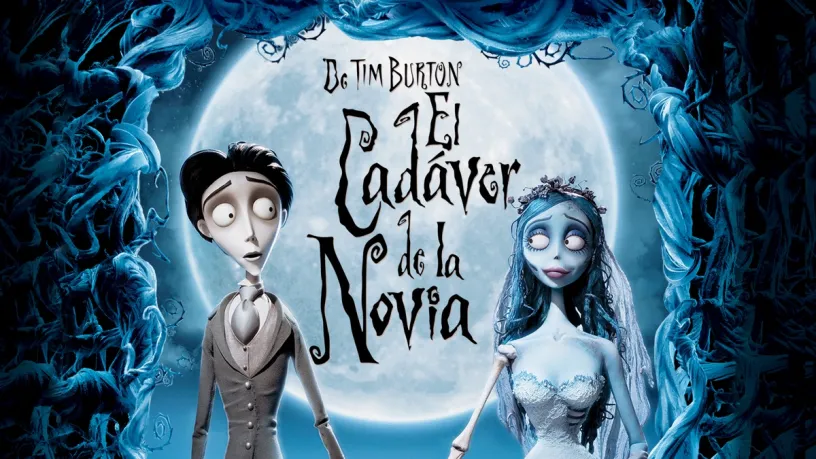
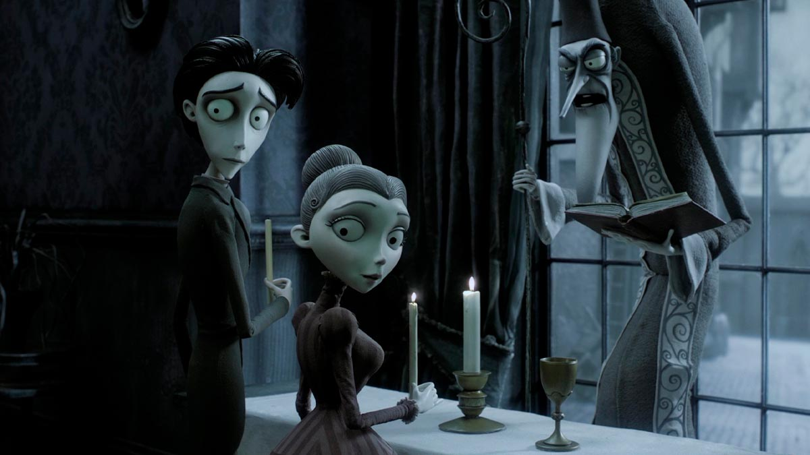

Año de publicación: 21 de octubre de 2005
Productores: Laika Tim Burton Productions
Reseña: El mundo de los vivos, gris, oscuro, mezquino, sin música, triste; el mundo de los muertos, coloreado, luminoso, sincero, lleno de música, alegre. El contraste entre ambas "realidades" es el elemento que pone de manifiesto la crítica que Tim Burton inicia con La novia cadáver: el mundo de los vivos puede llegar a ser tan despreciable que marchar a vivir en el mundo de los muertos podría ser una opción no tan mala. El argumento, sencillo, basado en un cuento popular jueurús del siglo XIX, transcurre en un pueblo ficticio de la época victoriana. Víctor y Victoria -divertida manera de vincular historia, personajes y época- son dos jóvenes obligados a contraer matrimonio. Obligados por sus padres: los de él, pescaderos que han amasado una fortuna gracias al negocio del pescado, pretenden ascender socialmente casándose con Victoria, hija única de una familia de la alta sociedad; los de ella, aristócratas arruinados, pretenden aprovechar la riqueza de los pescaderos para enjugar deudas y salir de la bancarrota casándola con Víctor, hijo único también. Los dos jóvenes se conocen y se gustan, y lo que era un enlace arreglado se convierte en una historia de amor auténtico. Pero un error absurdo llevará a Víctor a casarse con la novia equivocada. Una chica muerta y al que Víctor le coloca la alianza de matrimonio. Un equívoco terrible que arrastra a Víctor al mundo de los muertos. Allí descubre que el mundo de la ultratumba no sería tan horroroso si no fuera porque su prometida, Victoria, no está con él. Tim Burton y su mirada crítica abre los ojos de los espectadores para que miremos qué hay detrás del decorado de las vidas que se construyen sobre las falsas apariencias. Burton nos lleva de la mano y nos enseña no sólo que nada es lo que parece, sino que a menudo es todo lo contrario. Contrapone así la imagen idílica que se presupone a la familia, y retrata unos adultos egoístas y superficiales dispuestos a todo para preservar sus intereses. En este sentido, La novia cadáver es una reflexión crítica interesante sobre el lado oscuro del mundo de los adultos, y sobre el comportamiento de estos que puede ser más aterrador que el más horroroso de los fantasmas.
Calificación: Al 84% de los usuarios de Google les gustó esta película
